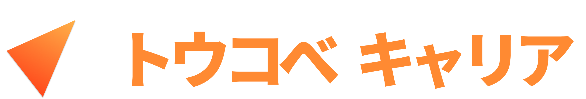

講師経験が、
最高の武器に。
何から就活を始めればいいか分からない。
それが、皆さんから一番多く寄せられる相談です。
志望業界が決まっていなくても、
まだ何も準備をしていなくても大丈夫。
工夫した授業準備や、
点数が上がって一緒に喜んだ経験。
誰かの成長に真剣に向き合ったその時間は、
すでに社会で高く評価される、
立派な実績です。
トウコベキャリアなら、
その確かな「指導実績」が、
あなただけのキャリア機会へと変わります。
まずは今の頑張りを整理する第一歩を、
ここから踏み出してみませんか。
志望業界が決まっていなくても大丈夫。
まずは話してみることから始めよう。
カードをタップしてメンターを選択👇
コンサル・商社・デベロッパー・IT。
志望領域の先輩が直接対応します。
予約から面談完了まで、
シンプルな3ステップ。
Step 01
上のカルーセルから志望に合ったメンターを選択。
Jicooの予約フォームから空き日程を選んで
申し込んでください。
入力は3分で完了します。
Step 02
予約完了後、確認メールが届きます。
面談前日にリマインドをお送りするので、
事前準備は不要。
「話すことがない」でも大丈夫です。
Step 03
ZoomのURLをクリックするだけで参加完了。
志望業界・自己分析・ES添削・GD対策……
なんでも話せます。
まずは現状を聞かせてください。
面談前に気になること、
まとめて解決しよう。
まずは気軽に話してみよう。
就活を始めていなくても、
志望業界が決まっていなくても大丈夫。